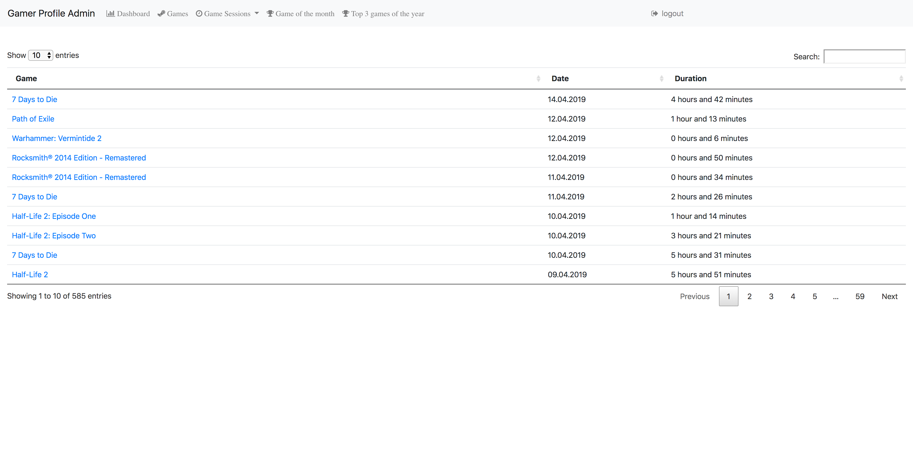
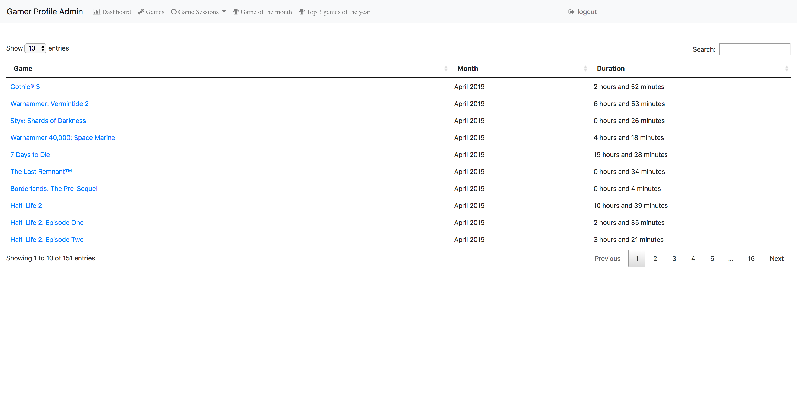
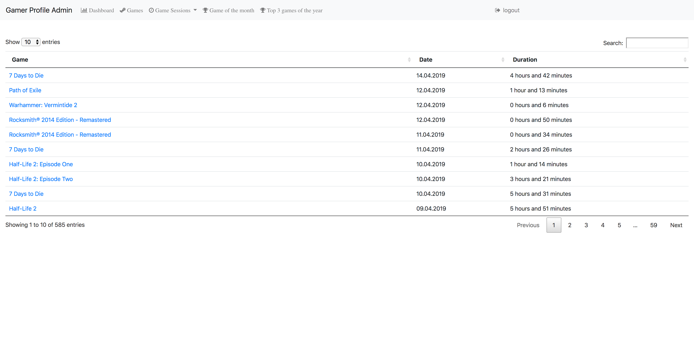
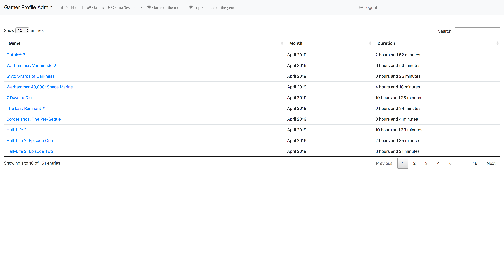

Here is a list of my projects I have been working on in my free time.
Want to check your gaming behavior? At least for Steam I created an application to measure exactly these data. After creating an account and connecting it to Steam you are able to get daily information as well as aggregated time per month and insights per game.
There is also the option to set your Steam profile to public to get insights into your achievement count and with some manual labor you can set your games to open / paused / playing / finished / given up to get a deeper understanding of all the unplayed games.
References:
You want a fast application to show your fantastic band? With just a bit of configuration you'll get news, gigs and links to your social media. This project is mainly for a friend and his band but feel free to use it.
References: